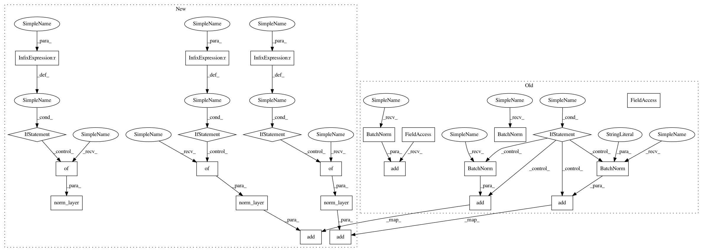

2318052dc79966bf36675606b7d992a347418292,gluoncv/model_zoo/resnet.py,BottleneckV1,__init__,#BottleneckV1#Any#Any#Any#Any#Any#Any#,133
Before Change
super(BottleneckV1, self).__init__(**kwargs)
self.body = nn.HybridSequential(prefix="")
self.body.add(nn.Conv2D(channels//4, kernel_size=1, strides=stride))
self.body.add(nn.BatchNorm())
self.body.add(nn.Activation("relu"))
self.body.add(_conv3x3(channels//4, 1, channels//4))
self.body.add(nn.BatchNorm())
self.body.add(nn.Activation("relu"))
self.body.add(nn.Conv2D(channels, kernel_size=1, strides=1))
if use_se:
self.se = nn.HybridSequential(prefix="")
self.se.add(nn.Dense(channels // 4, use_bias=False))
self.se.add(nn.Activation("relu"))
self.se.add(nn.Dense(channels * 4, use_bias=False))
self.se.add(nn.Activation("sigmoid"))
else:
self.se = None
if not last_gamma:
self.body.add(nn.BatchNorm())
else:
self.body.add(nn.BatchNorm(gamma_initializer="zeros"))
if downsample:
self.downsample = nn.HybridSequential(prefix="")
self.downsample.add(nn.Conv2D(channels, kernel_size=1, strides=stride,
use_bias=False, in_channels=in_channels))
self.downsample.add(nn.BatchNorm())
else:
self.downsample = None
After Change
downsample : bool, default False
Whether to downsample the input.
in_channels : int, default 0
Number of input channels. Default is 0, to infer from the graph.
last_gamma : bool, default False
Whether to initialize the gamma of the last BatchNorm layer in each bottleneck to zero.
use_se : bool, default False
Whether to use Squeeze-and-Excitation module
norm_layer : object
Normalization layer used (default: :class:`mxnet.gluon.nn.BatchNorm`)
Can be :class:`mxnet.gluon.nn.BatchNorm` or :class:`mxnet.gluon.contrib.nn.SyncBatchNorm`.
norm_kwargs : dict
Additional `norm_layer` arguments, for example `num_devices=4`
for :class:`mxnet.gluon.contrib.nn.SyncBatchNorm`.
In pattern: SUPERPATTERN
Frequency: 3
Non-data size: 24
Instances
Project Name: dmlc/gluon-cv
Commit Name: 2318052dc79966bf36675606b7d992a347418292
Time: 2019-01-07
Author: cheungchih@gmail.com
File Name: gluoncv/model_zoo/resnet.py
Class Name: BottleneckV1
Method Name: __init__
Project Name: dmlc/gluon-cv
Commit Name: 2318052dc79966bf36675606b7d992a347418292
Time: 2019-01-07
Author: cheungchih@gmail.com
File Name: gluoncv/model_zoo/resnet.py
Class Name: BottleneckV1
Method Name: __init__
Project Name: dmlc/gluon-cv
Commit Name: 2318052dc79966bf36675606b7d992a347418292
Time: 2019-01-07
Author: cheungchih@gmail.com
File Name: gluoncv/model_zoo/resnext.py
Class Name: Block
Method Name: __init__
Project Name: dmlc/gluon-cv
Commit Name: 2318052dc79966bf36675606b7d992a347418292
Time: 2019-01-07
Author: cheungchih@gmail.com
File Name: gluoncv/model_zoo/resnet.py
Class Name: BasicBlockV1
Method Name: __init__